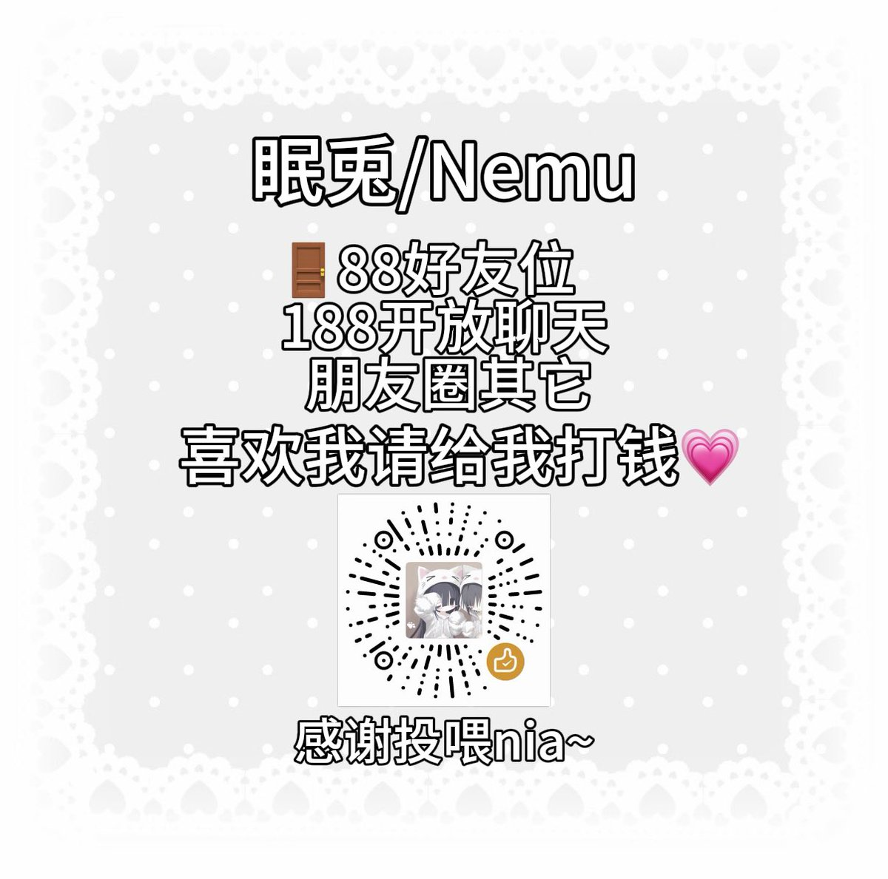
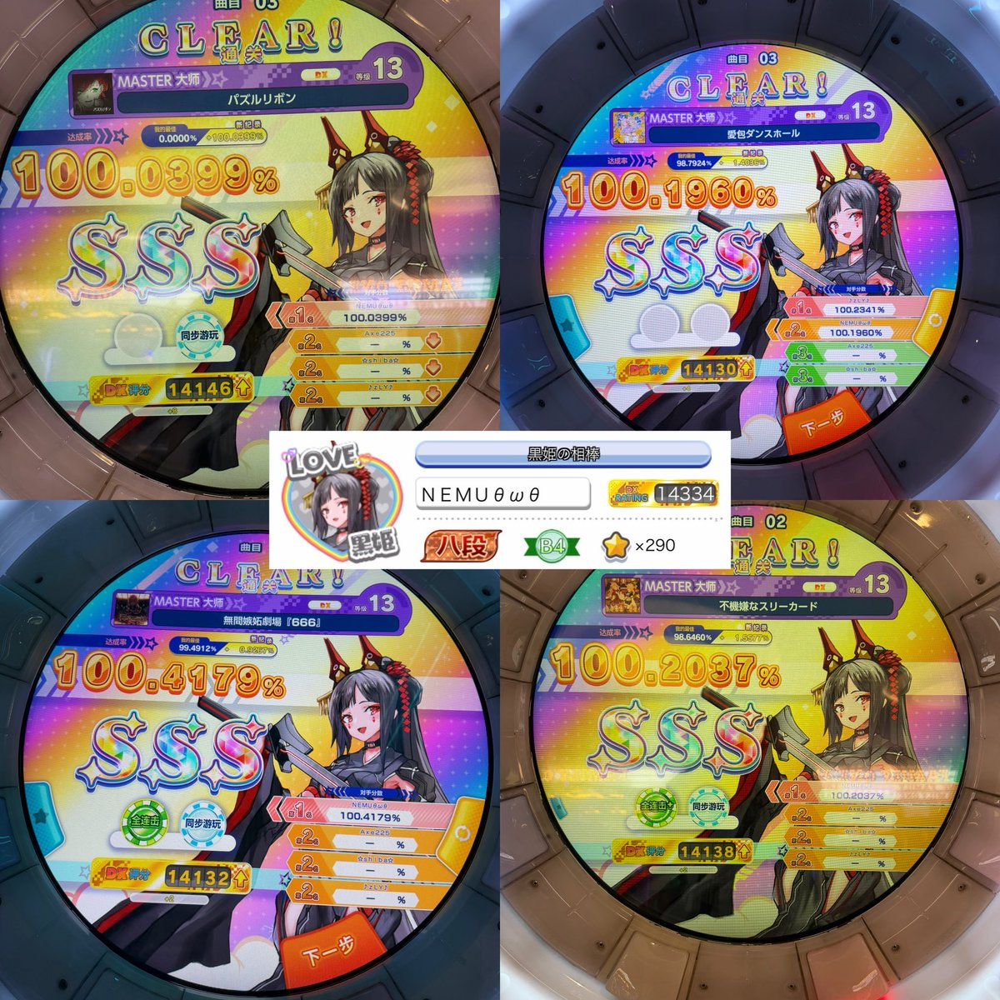

为何人生如此悲惨2.0
@YuganQwQ
@nemuri_QAQ @missU1319 宝宝我想跟你互fo🥺


ねむり貓🍬
@nemuri_QAQ
🔝
眠兎/Nemu
我只是一个喜欢看管人打音游的门槛妹
📍山东临沂/上海 同IP可以和我一起来打舞萌嗯
餐劵/穿孔/纹身/亚文化/那啥系/cos/药物依赖/od/🚬🍺/抽象/双相/焦虑
心理女生理女 不歧视一切群体 我喜欢和小女孩and长发男一起玩我就这样 同圈同好扩不需要🚪 自认非常之温良欢迎来和我一起玩呀🐰🤍 https://t.co/My1yUWKyMc